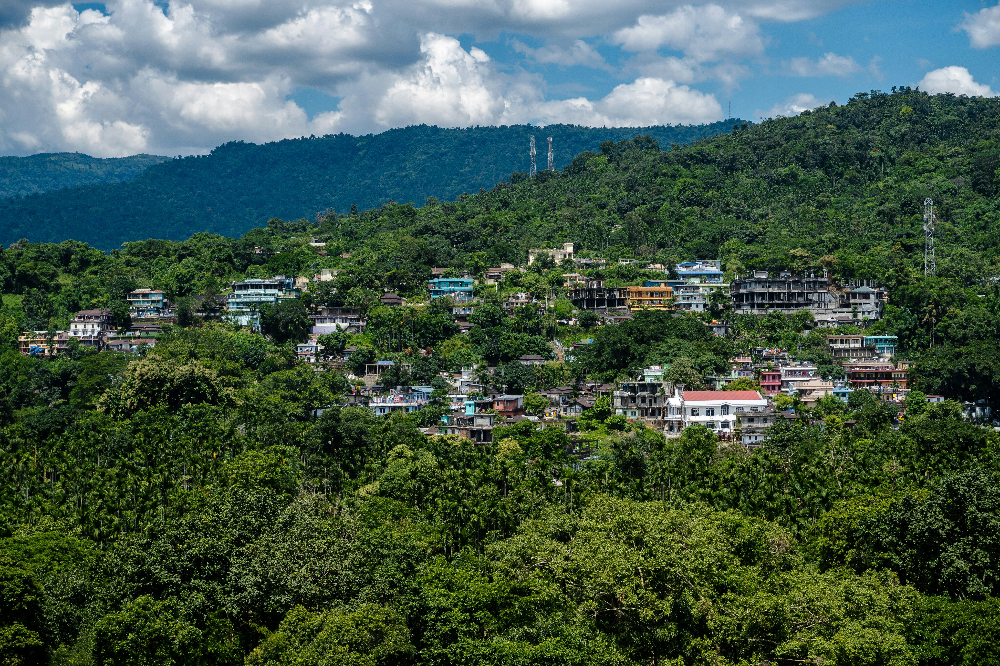
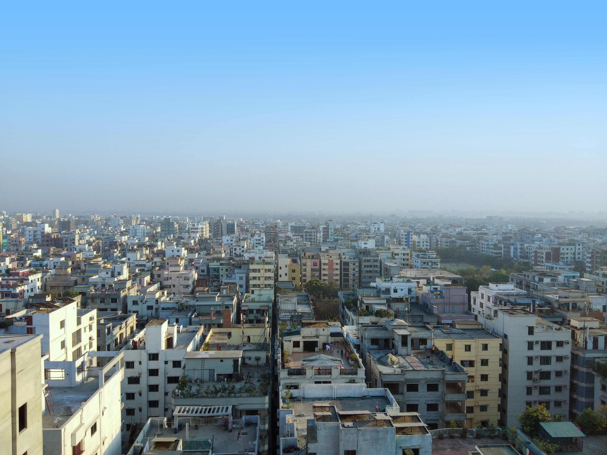

Sylhet
Nestled in the northeast, Sylhet enchants visitors with rolling tea estates, crystal-clear rivers, and ancient shrines. Highlights include the surreal beauty of Jaflong's stone beaches, the haunting stillness of Ratargul Swamp Forest, the spiritual calm of Shah Jalal Mazar, and the emerald rows of Lakkatura Tea Garden — a destination that feels worlds apart from the ordinary.

Dhaka
Bangladesh's vibrant capital pulses with history, culture, and relentless energy. From the ornate pink palace of Ahsan Manzil along the Buriganga River to the iconic silhouette of the National Parliament Building, Dhaka rewards every curious traveller. Explore the National Museum's rich collections, pay homage at the National Martyrs' Memorial, and lose yourself in the colourful chaos of Old Dhaka's lanes.
Chittagong
Bangladesh's port city blends sea breeze, hills, and heritage into one unforgettable destination. Stroll the windswept sands of Patenga Sea Beach at sunset, wander the peaceful Foy's Lake amid forested hills, or journey into the dramatic Chittagong Hill Tracts. The Chittagong War Cemetery stands as a moving tribute to history, offering quiet reflection amid immaculate grounds.